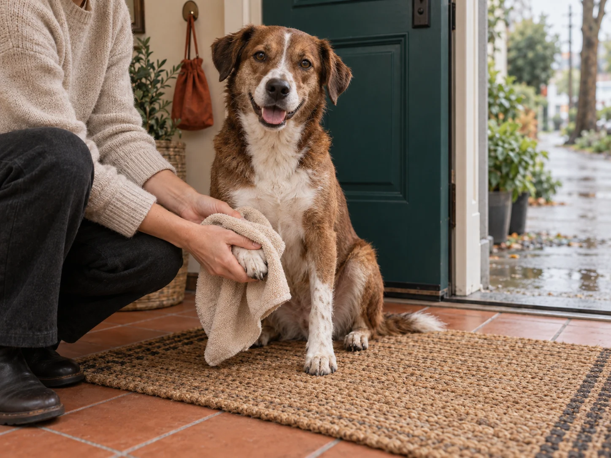

A family project centred on the everyday leash: a fixed length, a loop and a straightforward choice.
Our story / Since 2019
Ordinary walks.
A good place
to begin.
Pawshore started with the little pile by the door: a leash, a pouch and a towel that was never quite where it needed to be.

A small team in Vancouver
Twelve people.
Three things to
think carefully about.
We are a family-run accessories brand for people who walk their dogs through ordinary city days. We design the range in Vancouver and coordinate sourcing, product information and retailer support from here.
Keeping our collection small gives each item a clear job. Tide holds a place in your hand. Trail carries a few treats for the outing. Home waits for the paws that find the puddles.
We choose a short list of colours and sizes, write down what is actually included, and keep the dimensions and care information close by. You should not need to search through a campaign to find the length of a leash.
How the range took shape
One routine.
A few thoughtful
additions.
The Trail pouch joined the range, with a lining that could be turned out when the walk was over.
Home brought a drying cloth into the collection, with two surfaces to choose from and one place to hang it.
A twelve-person team, three core accessories and a domestic Canadian focus, including independent retailers who want a compact range.
What belongs here.
Practical accessories, understandable choices and care information that stays with the product. Our work is product design and sourcing coordination, not an in-house factory or veterinary service.
Explore the whole collection ↗A note for shopkeepers.
We welcome conversations with independent Canadian pet and lifestyle shops. Begin with the three-product overview and preparation checklist to consider where the range would sit on your shelves.
Retailer preparation ↗Make room for your routine
A few things.
Your kind of walk.
Start with a pair or a trio. Swap a size, leave something out and see exactly what goes into your walking kit.
A local demo with item prices. No checkout or delivery.